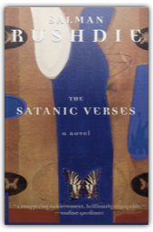

Shame
Salman Rushdie
Shame
Salman Rushdie

Omar Khayyam Shakil had three mothers who shared the symptoms of pregnancy, as they did everything else, inseparably. At their six breasts, Omar was warned against all feelings and nuances of shame. It was training which would prove useful when he left his mothers' fortress (via the dumb-waiter) to face his shameless future...As captivating fairy-tale, devastating political satire and exquisite, uproarious entertainment, "Shame" is a novel without rival.

The Satanic Verses: A Novel
Salman Rushdie
Just before dawn one winter's morning, a hijacked jetliner explodes above the English Channel. Through the falling debris, two figures, Gibreel Farishta, the biggest star in India, and Saladin Chamcha, an expatriate returning from his first visit to Bombay in fifteen years, plummet from the sky, washing up on the snow-covered sands of an English beach, and proceed through a series of metamorphoses, dreams, and revelations.  The Unbearable Bassington
Saki
The Unbearable Bassington
Saki
Short excerpt: Her enemies, in their honester moments, would have admitted that she was svelte and knew how to dress, but they would have agreed with her friends in asserting that she had no soul…  Century's End
Hillel Schwartz
Century's End
Hillel Schwartz
A "Future Shock" for the turn of the century, Century's End contains a rich trove of facts that will delight readers whose job it is to know what moods will befall us, what fears we need to assuage, and what ideas will claim our attention and our dollars as we near the beginning of the new millennium.  Why Darwin Matters: The Case Against Intelligent Design
Michael Shermer
Why Darwin Matters: The Case Against Intelligent Design
Michael Shermer
A creationist-turned-scientist demonstrates the facts of evolution and exposes Intelligent Design's real agenda
The Jungle: The Uncensored Original Edition
Upton Sinclair
For nearly a century, the original version of Upton Sinclair's classic novel has remained almost entirely unknown. When it was published in serial form in 1905, it was a full third longer than the censored, commercial edition published in book form the following year. That expurgated commercial edition edited out much of the ethnic flavor of the original, as well as some of the goriest descriptions of the meat-packing industry and much of Sinclair's most pointed social and political commentary. The text of this new edition is as it appeared in the original uncensored edition of 1905. It contains the full 36 chapters as originally published, rather than the 31 of the expurgated edition. A new foreword describes the discovery in the 1980s of the original edition and its subsequent suppression, and a new introduction places the novel in historical context by explaining the pattern of censorship in the shorter commercial edition.
Invitation to the Dance
Hilary Spurling
An erudite companion to Anthony Powell's 12-volume masterwork, A Dance to the Music of Time, which The NewYorker hailed as "one of the most important works of fiction since the Second World War."A Dance to the Music of Time is a landmark of 20th-century literature—but as the reader cavorts through the 12-volume novel alongside the narrator Nicholas Jenkins, it soon becomes apparent that he, too, confuses dates and events. Here, Hilary Spurling places every detail in its proper place. A magnificent database of Powell's imagination and England's cultural landscape, Invitation to the Dance encompasses more than 400 characters and one million words of Powell's lively epic.
Teller of Tales: The Life of Arthur Conan Doyle
Daniel Stashower
Winner of the 1999 Edgar Award for Best Biographical Work, this is "an excellent biography of the man who created Sherlock Holmes" (David Walton, The New York Times Book Review)
Thirty Days: Tony Blair and the Test of History
Peter Stothard
Tony Blair was America's closest ally in the war against Saddam Hussein. It was a powerful yet precarious position for the British Prime Minister, as he fought for his own future in backing George W. Bush and sending Britain's forces into Iraq. In this gripping day-by-day chronicle, Peter Stothard takes us behind the scenes as no one has before to reveal a unique portrait of a political leader under fire at the center of the world stage.
The Future of an Illusion
James Strachey
Of the various English translations of Freud's major works to appear in his lifetime, only one was authorized by Freud himself: The Standard Edition of the Complete Psychological Works of Sigmund Freud under the general editorship of James Strachey.Freud approved the overall editorial plan, specific renderings of key words and phrases, and the addition of valuable notes, from bibliographical and explanatory. Many of the translations were done by Strachey himself; the rest were prepared under his supervision. The result was to place the Standard Edition in a position of unquestioned supremacy over all other existing versions. Newly designed in a uniform format, each new paperback in the Standard Edition opens with a biographical essay on Freud's life and work —along with a note on the individual volume—by Peter Gay, Sterling Professor of History at Yale.
Whittaker Chambers: A Biography
Sam Tanenhaus
Primarily known as the accuser of Alger Hiss, Whittaker Chambers was a commanding, complex figure who was center stage during many of the public events of his time, yet remained intensely private. This book covers Chambers' personal life, as well as his emergence as a dominant voice in the postwar ant-Communist movement. 16 pp. of photos. 640 pp. Print ads. Author tour. 35,000 print. |
 Made with Delicious Library
Made with Delicious Library
Springfield, VA zipflap congrotus delicious library Fogus, Michael